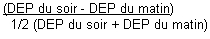

RÉSUMÉ DES CARACTÉRISTIQUES DU PRODUIT
ANSM - Mis à jour le : 15/02/2013
FLIXOTIDE 125 microgrammes/dose, suspension pour inhalation en flacon pressurisé
2. COMPOSITION QUALITATIVE ET QUANTITATIVE
Propionate de fluticasone ................................................................................................. 125 microgrammes
Pour une dose.
Pour la liste complète des excipients, voir rubrique 6.1.
Suspension pour inhalation en flacon pressurisé.
4.1. Indications thérapeutiques
· Traitement continu anti-inflammatoire de l'asthme persistant*.
*L'asthme persistant se définit par l'existence de symptômes diurnes plurihebdomadaires et/ou de symptômes nocturnes plus de 2 fois par mois.
4.2. Posologie et mode d'administration
Posologie:
La posologie est strictement individuelle. La dose initiale sera déterminée selon la sévérité de la maladie et sera ajustée en fonction des résultats individuels.
Il convient de toujours rechercher la posologie minimale efficace.
Pour un patient traité par béclométasone, la dose de fluticasone à préconiser est habituellement la moitié de la dose de béclométasone utilisée.
Adulte:
· Asthme persistant léger: (symptômes diurnes plus de 1 fois par semaine et moins de 1 fois par jour, symptômes nocturnes plus de 2 fois par mois, DEP ou VEMS > 80 % des valeurs prédites, variabilité du DEP* comprise entre 20 et 30 %):
100 à 150 microgrammes 2 fois par jour (matin et soir).
· Asthme persistant modéré: (symptômes diurnes quotidiens, crise retentissant sur l'activité et le sommeil, symptômes d'asthme nocturne plus de 1 fois par semaine, utilisation quotidienne de bêta-2 mimétiques inhalés d'action brève, DEP ou VEMS compris entre 60 et 80 % des valeurs prédites, variabilité du DEP* supérieure à 30 %):
150 à 500 microgrammes 2 fois par jour (matin et soir).
· Asthme persistant sévère: (symptômes permanents, crises fréquentes, symptômes d'asthme nocturne fréquents, activités physiques limitées par les symptômes d'asthme, DEP ou VEMS inférieur à 60 % des valeurs prédites, variabilité du DEP* supérieure à 30 %):
500 à 1000 microgrammes 2 fois par jour (matin et soir).
*La variabilité du DEP s'évalue sur la journée: 
ou sur une semaine.
Enfant de plus de 4 ans:
Asthme léger à modéré: 50 à 100 microgrammes 2 fois par jour.
Asthme sévère: 200 microgrammes 2 fois par jour.
Le rapport efficacité/sécurité de doses quotidiennes supérieures n'a pas été étudié chez l'enfant. Il conviendra de toujours rechercher la dose minimale efficace.
Des présentations plus faiblement dosées permettent l'administration des posologies recommandées chez l'enfant.
Enfant de 1 à 4 ans:
La posologie habituellement efficace est de 50 à 100 microgrammes deux fois par jour, mais peu de données sont disponibles avec la fluticasone dans l'asthme sévère de l'enfant de 1 à 4 ans.
Il conviendra de toujours rechercher la dose minimale efficace et d'envisager une décroissance de la dose lorsque le patient est stabilisé.
Des présentations plus faiblement dosées permettent l'administration des posologies recommandées chez l'enfant.
Fréquence d'administration:
La dose quotidienne est habituellement répartie en 2 prises par jour.
En cas d'asthme instable, la dose et le nombre de prises pourront être augmentés jusqu'à une administration en 3 à 4 prises par jour en fonction de l'état clinique du patient.
Chez les enfants de plus de 4 ans, lorsque l'asthme est stabilisé par une dose quotidienne de 100 microgrammes par jour, celle-ci pourra être administrée en une prise par jour lorsque les symptômes ont régressé et que l'asthme est contrôlé. En cas de destabilisation de l'asthme, la dose et le nombre de prises devront être réaugmentées.
Mode d'administration:
Inhalation par distributeur avec embout buccal.
Il est souhaitable que le médecin s'assure par lui-même du bon usage du système d'inhalation par le patient.
Lorsqu'il est mis en évidence chez le patient une mauvaise synchronisation main/poumon empêchant la coordination des mouvements inspiration/déclenchement de l'appareil, l'utilisation d'une chambre d'inhalation adaptée est indiquée.
Après avoir agité l'appareil et enlevé le capuchon, le patient devra:
· expirer profondément,
· présenter l'embout buccal à l'entrée de la bouche, le fond de la cartouche métallique dirigé vers le haut,
· commencer à inspirer en pressant sur la cartouche métallique tout en continuant à inspirer lentement et profondément,
· retirer l'embout buccal et retenir sa respiration pendant au moins 10 secondes,
· se rincer la bouche après inhalation du produit,
· l'embout buccal de l'appareil de propulsion doit, par mesure d'hygiène, être nettoyé après emploi.
Chaque pression sur le fond de la cartouche délivre une dose précise. La durée de la pression n'a donc pas d'importance.
S'il est nécessaire, retirer la cartouche, rincer l'embout à l'eau chaude, sécher et remettre la cartouche.
· Hypersensibilité à la fluticasone.
· Intolérance à ce médicament (survenue de toux ou de bronchospasme après inhalation du produit). Dans ce cas, il conviendra d'interrompre ce traitement et de prescrire d'autres formes d'administration ou d'autres thérapeutiques.
4.4. Mises en garde spéciales et précautions d'emploi
Prévenir le patient que ce médicament n'est pas destiné à juguler une crise d'asthme déclarée, mais est un traitement continu de fond de la maladie asthmatique devant être poursuivi régulièrement, quotidiennement et aux doses prescrites, et dont les effets sur les symptômes de l'asthme ne se feront sentir qu'au bout de quelques jours à quelques semaines.
Si, en dépit d'un traitement bien conduit, une dyspnée paroxystique survient, on doit avoir recours à un bronchodilatateur bêta-2 mimétique par voie inhalée d'action rapide et de courte durée pour traiter les symptômes aigus. Il conviendra d'en informer le patient et de lui préciser qu'une consultation médicale immédiate est nécessaire si, dans ce cas, le soulagement habituellement obtenu n'est pas rapidement observé après inhalation du bronchodilatateur bêta-2 mimétique.
Si un patient développe en quelques jours une augmentation rapide de sa consommation en bronchodilatateurs bêta-2 mimétiques d'action rapide et de courte durée par voie inhalée, on doit craindre (surtout si les valeurs du débitmètre de pointe s'abaissent et/ou deviennent irrégulières) une décompensation de sa maladie et la possibilité d'une évolution vers un asthme aigu grave (état de mal asthmatique). Le médecin devra également prévenir le patient de la nécessité dans ce cas, d'une consultation immédiate. La conduite thérapeutique devra alors être réévaluée.
Le patient doit être averti que l'amélioration de son état clinique ne doit pas conduire à une modification de son traitement, en particulier à l'arrêt de la corticothérapie par voie inhalée, sans avis médical.
L'attention des sportifs sera attirée sur le fait que cette spécialité contient un principe actif pouvant induire une réaction positive des tests pratiqués lors des contrôles antidopages.
Précautions d'emploi
En cas d'infection bronchique ou de bronchorrhée abondante, un traitement approprié est nécessaire afin de favoriser la diffusion optimale du produit dans les voies respiratoires.
En cas de déstabilisation de l'asthme, ou de contrôle insuffisant des exacerbations d'asthme malgré des doses maximales de corticoïdes par voie inhalée, un traitement par corticothérapie par voie générale en cure courte doit être envisagé. Il est alors nécessaire de maintenir la corticothérapie inhalée associée au traitement par voie générale.
Des effets systémiques peuvent apparaître en particulier lors de traitement au long cours avec des doses élevées de corticoïdes par voie inhalée. Le risque de retentissement systémique reste néanmoins moins important avec les corticoïdes inhalés qu’avec les corticoïdes oraux. Les effets systémiques possibles sont syndrome de Cushing ou symptômes cushingoïdes, amincissement cutané, hématomes sous cutanés, insuffisance surrénalienne, retard de croissance chez les enfants et les adolescents, diminution de la densité minérale osseuse, cataracte, glaucome et plus rarement, troubles psychologiques du comportement comprenant hyperactivité psychomotrice, troubles du sommeil, anxiété, dépression ou agressivité (en particulier chez l’enfant). Il convient donc de toujours veiller à rechercher la posologie minimale efficace permettant de maintenir le contrôle de l’asthme (voir rubrique 4.8 « Effet indésirables »).
L'administration conjointe de corticoïdes par voie inhalée chez les asthmatiques sous corticothérapie orale au long cours (patients corticodépendants) ne dispense pas des précautions nécessaires lors d'une réduction des doses de corticoïde par voie orale. Celles-ci seront diminuées très progressivement et le sevrage devra être effectué sous surveillance médicale attentive (à la recherche de l'apparition de signes d'insuffisance surrénale aiguë ou subaiguë) se prolongeant au-delà de l'arrêt de la corticothérapie par voie générale.
4.5. Interactions avec d'autres médicaments et autres formes d'interactions
Les concentrations plasmatiques retrouvées après inhalation étant faibles, le risque d'interactions médicamenteuses entraînant un retentissement clinique est en général peu probable. Néanmoins, il conviendra de rester prudent en cas d'administration concomitante de produits inhibiteurs puissants du CYP3A4 (ex: ketoconazole, ritonavir) lors d'un traitement par fluticasone en raison du risque d'augmentation des concentrations plasmatiques de propionate de fluticasone.
Toute augmentation de l'exposition systémique survenant lors de traitements associés pendant une période prolongée peut entraîner une majoration de l'effet freinateur sur l'axe corticosurrénalien. Quelques cas décrivant un retentissement clinique lié à ce type d'interaction ont été rapportés.
Propionate de fluticasone
Chez l'animal, l'expérimentation met en évidence un effet tératogène des corticoïdes variable selon les espèces.
Dans l'espèce humaine, les études épidémiologiques n'ont décelé aucun risque malformatif lié à la prise de corticoïdes lors du premier trimestre bien qu'il existe un passage transplacentaire. Lors de maladies chroniques nécessitant un traitement tout au long de la grossesse, un léger retard de croissance intra-utérin est possible. Une insuffisance surrénale néonatale a été exceptionnellement observée après corticothérapie à dose élevée par voie systémique.
Il semble justifié d'observer une période de surveillance clinique (poids, diurèse) et biologique du nouveau-né.
Norflurane (Tétrafluoroéthane ou HFA 134a): gaz propulseur
L'étude des fonctions de reproduction menée chez l'animal n'a pas mis en évidence d'effet néfaste de l'administration de norflurane (tétrafluoroéthane ou HFA 134a) contenu dans ce médicament.
En l'absence d'effet tératogène chez l'animal, un effet malformatif dans l'espèce humaine n'est pas attendu. Il n'existe néanmoins actuellement pas de données pertinentes, ou en nombre suffisant, pour évaluer un éventuel effet malformatif ou fœtotoxique du norflurane lorsqu'il est administré pendant la grossesse.
Propionate de fluticasone
Les corticoïdes passent dans le lait.
Norflurane (Tétrafluoroéthane ou HFA 134a): gaz propulseur
Le passage de HFA 134a et de ses métabolites dans le lait n'est pas connu.
4.7. Effets sur l'aptitude à conduire des véhicules et à utiliser des machines
Sans objet.
· Possibilité de survenue de candidose oropharyngée. Elle cède le plus souvent spontanément ou à un traitement approprié et il est exceptionnel qu'elle nécessite l'arrêt de la corticothérapie par voie inhalée. Son risque d'apparition augmente avec la dose utilisée et le nombre de prises. Il peut être prévenu par rinçage de la bouche à l'eau après inhalation.
· Possibilité de survenue de gêne pharyngée, de dysphonie, de raucité de la voix, pouvant être prévenues par rinçage de la bouche après inhalation.
· Comme avec d'autres produits inhalés, possibilité de survenue de toux et rarement de bronchospasme à la suite de l'inhalation. Dans ce cas, il conviendra d'interrompre le traitement et de prescrire d'autres thérapeutiques ou d'autres formes d'administration.
· Des réactions d'hypersensibilité avec manifestations cutanées ont été signalées. De rares cas d'œdèmes facial et oropharyngé ont été rapportés.
Effets systémiques
Des effets systémiques peuvent apparaitre lors de traitement au long cours avec des doses élevées (voir rubrique 4.4). Ont été décrites avec la corticothérapie par voie inhalée des observations d'amincissement cutané, d'hématomes sous-cutanés, de dépression des fonctions surrénaliennes biologiques (diminution du cortisol plasmatique et de la cortisolurie des 24 heures), de raréfaction du tissu osseux, de ralentissement de la croissance, de cataracte et de glaucome.
L'administration de fortes doses au long cours peut donc nécessiter une surveillance en particulier chez les enfants et les sujets âgés.
La recherche de la posologie minimale efficace doit être toujours recommandée en considérant le risque d'un contrôle insuffisant de l'asthme qui devra être pesé face à celui du retentissement systémique.
Fréquence très rare :
-cataracte et glaucome.
-Troubles psychiatriques : anxiété, troubles du sommeil, modification du comportement incluant hyperactivité psychomotrice et irritabilité (principalement chez les enfants).
Fréquence indéterminée :
-Dépression, agressivité (principalement chez les enfants).
L'emploi de ce médicament à des doses très supérieures aux doses recommandées est le reflet d'une aggravation de l'affection respiratoire nécessitant une consultation rapide pour réévaluation thérapeutique.
5. PROPRIETES PHARMACOLOGIQUES
5.1. Propriétés pharmacodynamiques
GLUCOCORTICOIDE PAR VOIE INHALEE
ANTI-ASTHMATIQUE
Code ATC: R03BA5.
Le propionate de fluticasone en inhalation exerce une action anti-inflammatoire marquée sur la muqueuse bronchique.
Chez l'adulte, l'effet freinateur du propionate de fluticasone sur l'axe hypophysosurrénalien ne se manifeste qu'à une posologie supérieure à 1500 microgrammes par 24 heures.
5.2. Propriétés pharmacocinétiques
Propionate de fluticasone
Après inhalation une partie de la dose est déglutie, l'autre partie pénètre dans les bronches où elle exerce ses effets. Lors d'une utilisation correcte de l'appareil, la biodisponibilité systémique absolue est de 12 à 26 % provenant presque exclusivement de la résorption pulmonaire. Sa biodisponibilité orale est quasi nulle.
Après administration orale de fluticasone, 87 à 100 % de la dose est excrétée dans les fèces dont une partie sous forme inchangée (de 20 % pour une dose de 1 mg, jusqu'à 75 % pour une dose de 16 mg).
Il existe un important effet de premier passage hépatique. 98% de la dose administrée par voie IV est éliminée en 3 à 4 heures et la demi-vie terminale d'élimination plasmatique est d'environ 8 heures.
Le volume de distribution est voisin de 300 litres.
La liaison aux protéines plasmatiques est de 91 %. Le propionate de fluticasone est principalement métabolisé par le cytochrome P450 isoenzyme CYP3A4 sous forme de métabolites sans effet corticoïde.
Norflurane (Tétrafluoroéthane ou HFA 134a): gaz propulseur
Après inhalation d'une bouffée, l'absorption de HFA 134a est très faible et rapide, la concentration maximale est atteinte en moins de 6 minutes.
Un très faible métabolisme hépatique avec formation d'acide trifluoroacétique et trifluorocétaldéhyde a été mis en évidence chez l'animal (souris et rats).
Néanmoins, les études cinétiques réalisées chez des patients après administration de HFA 134a en situation pathologique, n'ont pas mis en évidence la formation d'acide trifluoroacétique.
5.3. Données de sécurité préclinique
Non renseignée.
Gaz propulseur: Norflurane (tétrafluoroéthane ou HFA 134 a).
Sans objet.
2 ans.
6.4. Précautions particulières de conservation
A conserver à une température ne dépassant pas 30°C.
Récipient sous pression:
· ne pas exposer à une température supérieure à 50°C, ni au soleil,
· ne pas percer,
· ne pas jeter au feu, même vide.
6.5. Nature et contenu de l'emballage extérieur
60 ou 120 doses en flacon pressurisé (Aluminium) avec valve doseuse et embout buccal.
6.6. Précautions particulières d’élimination et de manipulation
Pas d'exigences particulières.
7. TITULAIRE DE L’AUTORISATION DE MISE SUR LE MARCHE
Laboratoire GLAXOSMITHKLINE
100, route de Versailles
78163 Marly-le-Roi Cedex
FRANCE
8. NUMERO(S) D’AUTORISATION DE MISE SUR LE MARCHE
· 336 704-3: 60 doses en flacon pressurisé (Aluminium) avec valve doseuse et embout buccal.
· 336 706-6: 120 doses en flacon pressurisé (Aluminium) avec valve doseuse et embout buccal.
9. DATE DE PREMIERE AUTORISATION/DE RENOUVELLEMENT DE L’AUTORISATION
[à compléter par le titulaire]
10. DATE DE MISE A JOUR DU TEXTE
[à compléter par le titulaire]
Sans objet.
12. INSTRUCTIONS POUR LA PREPARATION DES RADIOPHARMACEUTIQUES
Sans objet.
Liste I.